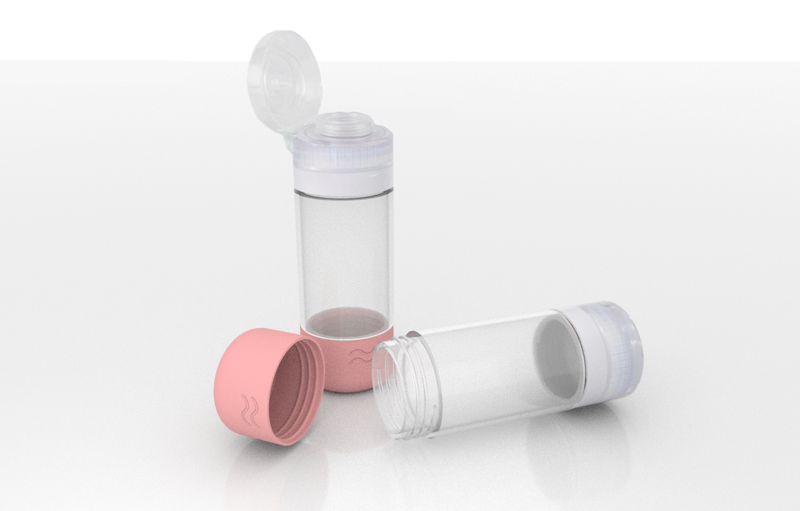

Twisti

Year: 2021
Duration: 2 months
Team Size: 4
Area: Product Design
Tools: Rhino, Maya, Photoshop
Type: Class Project
Arising from a product design course, Twisti is a product conceived to answer the question of designing a more ergonmic and attractive travel bottle. The design process involved identifying opportunities, conducting user research, drafting sketches, estimating production costs, developing product pitches, creating multiple rounds of protytpes, and obtaining user feedback. The product design project ended off with a year-end design fair, as well as a final presentation and a final product pitch. While I was involved in all stages of design, I specialized in creating product concept sketches and creating product renderings.
Mission Statement
In what way may we modify a travel-sized bottle so that it is more efficient and ergonomic for the user?
User Research
We asked people about how they used bottles throughout the day, anything they liked or disliked about their experiences with each bottle, what bottled products they found easiest to use, as well as what annoyances they had with different bottle designs. Based on our research, we found that users converged on a few select needs and wants:
- Many people expressed a preference for squeeze bottles, especially for difficult, viscous liquids like lotion, shampoo, or sunscreen
- People also generally cared a lot about the material from which squeeze bottles are made of, preferring them to be made of very flexible, lightweight, and durable components
- A good number of people also valued sustainability and eco-friendliness, and so we prioritized designing a product that could be multifunctional and also reusable
- From the feedback that we gathered via our early pitches and user-testing, it was clear that aesthetics mattered to many people
Initial Sketches
Alpha Prototype
Final Sketch and 3D-Printed Prototype
Final Maya Renders
Final Design Fair Results
During the virtual design fair from May 3-5, 2021, products from all sections of the product design course are showcased on the Wharton Product Design website, and voted on by faculty judges, industry experts, students and the public. Out of 55 student products, Twisti ranked top 10 in the number of student votes, in its percentage margin, and in its estimated profits.
The Design Fair Website